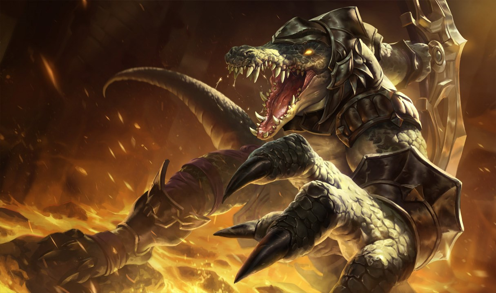
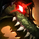
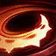
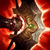
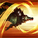
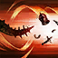
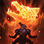
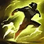
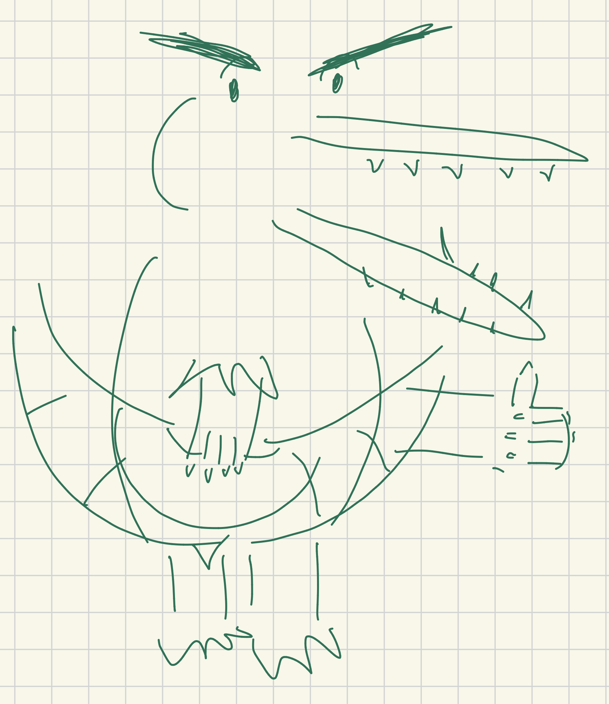

This is a combo and mechanics guide for Renekton in League of Legends. It is aimed at top-lane players who want to improve their trading patterns, Fury management, animation cancels, all-in execution, and teamfight burst combos on Renekton.

Renekton is a strong early game top-lane bruiser that excels at aggressive short trades, sustain, and all-inning when the enemy health bar gets low enough. Instead of mana, he uses Fury, which empowers his abilities and makes him increasingly threatening as his Fury bar fills up. He is strongest between levels 3-11, when he has access to all of his abilities and can use that early game power to pressure lane, set up ganks, and create dive opportunities.
| Combo | Sequence | Difficulty | When to use? |
|---|---|---|---|
| AA → Q | AA → Q | Easy | As much as possible. This is the most important part of Renekton's kit. |
| AA → W | AA → W | Easy | |
| AA → E | AA → E | Easy | |
| AA → R | AA → R | Easy | |
| W → R | W → R | Easy | Any time you have empowered W and R up Better than R → W |
| R → Q | R → Q | Easy | Every time you R, if you have an ability up. |
| R → W | R → W | Easy | |
| R → E | R → E | Easy | |
| W → R → Q / E | W → R → Q / E | Medium |
You have empowered W and R up and want quick burst
100 Fury with W, R, and Q up
50 Fury with W, R, and E up
|
| Panther Combo | E → Q → (click) → AA | Hard | Engaging with < 50 Fury |
| Panther (W) | E → Q → (click) → W | Hard | Against enemies with quick disengage |
| Panther + AA-reset W | E → Q → (click) → AA → W | Hard |
25 Fury. 25 + E + Q + AA = 50 Fury for empowered W.
|
| E → E | E → (click) → E | Medium | Escaping or engaging lost distances |
| Flash → W | Flash → W | Easy |
Targeting enemy carry in team fight
Unreactable gank setup
|
| Flash → Q | Flash → Q | Easy | Finishing off low-health enemy |
| W → Flash | W → Flash | Medium | Escaping and turret dives |
| Quick Trade | E → Q → (click) → AA → W → AA → E | Hard | 25 Fury lane trade and disengage |
| W → R → Panther | W(emp) → R → E → Q → (click) → AA → E | Hard | >= 50 Fury all-ins Blowing up carry (highest possible burst) |
| Standard Lane Combo | E → AA → W → AA → Q → AA → E | Medium | >= 35 Fury extended lane trade |
| E → E Panther | E → (click) → E → Q → (click) → AA → W | Hard |
Long distance engage
High armor targets (for E2 armor pen)
|

Passive: Reign of AngerRenekton's basic attacks generate 5 Fury on-hit on everything except structures. The maximum Fury Renekton can have is 100.
After 12 seconds of being out of combat and not basic attacking, he loses 1 Fury every 0.25 seconds. Entering combat or using an attack will stop the Fury loss and refresh the timer. While Dominus is active, the timer is continuously refreshed.
While Renekton has at least 50 Fury, his next basic ability, excluding Slice, consumes 50 Fury to become empowered with an additional effect. Empowered abilities do not generate Fury.
Renekton generates 50% bonus Fury from all sources while below 50% of his maximum health.

Q: Cull The MeekCooldown: 7s | Duration: 0.25s | Radius: 400 Normal / 480 Dominus
Renekton deals physical damage in a circle around himself. This heals him for each enemy hit, up to a cap. Healing against champions is increased.
Renekton generates 2.5 Fury for each non-champion, and 10 for each champion hit, up to a cap of 30.
Renekton cannot basic attack nor cast Slice and Dice or Dominus for 0.25 seconds after Cull the Meek's activation.
Enhanced: Increased damage, tripled healing, and quadrupled healing cap.

W: Ruthless PredatorCooldown: 16/14/12/10/8s | Duration: ~0.2s | Empowers next basic attack
Renekton empowers his next basic attack against an enemy to have 175 range, strike twice (with a 75% AD bonus for each strike), and stun that enemy for 0.75 seconds. This attack also applies on-hit effects twice, generates Fury, and generates 10 bonus Fury if attacking an enemy champion. The attack does not trigger against structures. Ruthless Predator resets Renekton's basic attack timer.
After Ruthless Predator is finished resolving, Renekton cannot move nor cast Cull the Meek or Slice and Dice for 0.528 seconds. Casting Dominus ends this lockout prematurely.
Enhanced: Renekton instead strikes 3 times, completely destroying damage-mitigating shields on the target upon the first strike if they are not a monster, as well as increasing the stun duration to 1.5 seconds.

/
E: Slice and DiceCooldown: 16/14.5/13/11.5/10s | Range: 450 | Speed: 760 + 100% movement speed
Renekton dashes a fixed distance in the target direction, dealing physical damage to enemies he passes through.
If Renekton hits an enemy, he can recast Slice and Dice within the next 4 seconds.
Both casts generate 2 Fury for each non-champion hit and 10 Fury for each champion hit, up to 30 total per cast.
Enhanced: Only the recast, Dice, can be enhanced. It deals bonus physical damage and reduces the armor of enemies hit for 4 seconds.

R: DominusCooldown: 120/100/80s | Cast Time: 0.25s | Duration: 15s | Radius: 375
Renekton empowers himself for 15 seconds, gaining bonus health, 20% increased size, 25 bonus attack range, and 20 Fury, as well as increasing Cull the Meek's effect radius.
While Dominus is active, Renekton deals magic damage every 0.5 seconds to nearby enemies and generates 5 Fury per second, up to a maximum of 75 Fury.
Empowered W is almost always your strongest ability. In 1v1s, you should almost always prioritize spending fury on W.
Against high armor, low-mobility targets (Malphite, Ornn), it's sometimes better to use empowered E2 first for the armor pen.
Try to look at the exact amount of fury you currently have whenever possible (at the bottom of your screen). For example, if you have 44 fury, you know you have to either auto twice or Q before you can use empowered W. On the hotbar, 44 and 45 look pretty much the same.
Don't worry too much about geting perfect combos. It's more important to use the right empowered abilities at the right time.
All four of Renekton's abilities (all 3 basic abilites and ultimate) can be used to cancel his Auto Attack animation, which is the bread and butter for most of his combos.
Cancel the self-stun of W using R animation. This is the
Especially useful when using empowered W, where you'd be stuck in the animation for longer.
Important Note: There's a bug that causes you to not gain the 20 fury from R if you do this combo too fast. Try to wait a half second before pressing R, like in the video.
R animation can be cancelled by any ability. With all of these, just spam the ability right after pressing R. This cuts out most of the animation.
Note: You may notice that you can cancel W with R, or R with W. Which is better? 99% of the time, cancelling W with R is better, since that's the only way to cancel W, but you can cancel R with any ability.
Combine the previous two animation cancels, and you get a really quick burst of damage. Start with empowered W, mash R, then mash Q or E (depending on the situation).
Useful when: You have 100 fury and all cooldowns up, for the quick burst. Or when you have just 50 fury, and don't mind using regular Q.
For some reason, if you Q at the end of Renekton's E animation then right-click the ground, the Q animation is almost instant. This can only be explained by spaghetti code™.
If you pair this with an auto attack immediately after, you can E, Q, and AA almost instantly. It's hard to execute, but this is one of Renekton's highest DPS combos.
Useful when: You have 30 fury, since it builds up just enough to empower W.
Trivia: Named after the season 5 Renekton player Panther, who popularized the combo.
You can replace the auto attack with a W. This lets you get all three of your abilities out more quickly, at the cost of some sustained damage.
Useful when: Fighting ranged champs who can disengage you quickly (Quinn, Vayne), since you get all three abilities off instantly.
The Panther Combo extended with an AA-reset W. Same idea as above, but the extra auto before W maximizes DPS.
Useful when: You have time to land the extra auto (longer trades, uninterrupted windows).
Just like with E → Q, Renekton has a brief window at the end of his E where he can cast E again. Spam click the ground after your first dash, then press E again. (Note: this can be inconsistent on high ping.)
Useful when: Getting away or getting in quickly.

→This is an obvious one, but it's worth mentioning as you use it so often. It's usually best to press W first, buffer AA on the enemy, then flash into range. Practice doing this as quickly as possible.
Useful when: You have >50 fury and want to engage. You should flash W on the enemy ADC at least 3 times per game.
If you press Q then flash (like what you can do with other champs), you'll look like an idiot. Flash then Q.
Useful when: Finishing off a 1-hp enemy.
Press flash as your W is going off, and Renekton will flash away while the enemy is being stunned. This one's pretty niche.
Useful when: Escape situations and tower dives.
Below are some examples of stringing these combos together. This list is not at all comprehensive, and you should not try to memorize each of these sequences. It's better to think on the fly and come up with combos as you go. There's no perfect sequence for every situation.
Use the Panther Combo to build fury, then cancel the auto with empowered W and auto + E reset.
Useful when: Taking a quick trade in lane to catch your opponent off guard, since you initiate with only 30 fury.
The holy grail of burst combos. Everything cancels everything. Can start this combo with AA → W for maximum damage, or flash + W for gap close.
Useful when: Blowing up the enemy ADC in teamfights; flexing your mechanical mastery on this champion.
Not very flashy, but gets the job done. Weave in an auto between every single one of your abilities. This is maximum sustained damage. You can switch Q and E depending on which one you want to empower, and where the enemy is. You can use this to empower every ability if your ult is running.
Useful when: All-ins or long trades.
Use E's early to get empowered E armor pen, then panther combo and W.
Useful when: Fighting high armor targets (Ornn, Malphite)
This guide intends to be meta/patch agnostic, so specific items and runes won't be covered. However, on any given patch Renekton usually has two builds: bruiser and lethality.
The standard way to play Renekton. Good in long fights, 1v1s, 1vXs, frontlining for his team, and has a much more forgiving playstyle. In most metas, this is the build you'll go in 90% of games. With bruiser Renekton, you care less about getting your damage down as fast as possible, and more about maximizing total damage across the entire fight. This means you'll use combos with more auto attacks, and focus on empowering the right abilities at the right time.
The “fun” way to play Renekton. Good at one-shotting the enemy ADC in teamfights, and not much else. Renekton is a bit too immobile to be an assassin, so usually after one-shotting someone, he just dies. Still, it's an effective playstyle, and definitely has its place in the right games. It especially requires you to be sharp with your combos; lethality Renekton needs you to get as much damage down as fast as possible to kill the enemy before they can kill you.
It's worth noting that this choice of playstyle only really takes effect at 2 or 3 items. In the early game, Renekton plays the same no matter what.
Renekton is especially weak against ranged top-laners due to his short range and difficulty engaging onto champions that can poke him down and also outscale him.
Some common examples include: Teemo, Aurora, Vayne, Kayle, Quinn and Gangplank.
He can also be weak into heavily scaling tanks which can weather the early game and interrupt your engage later.
Some common examples include: Ornn, Poppy, Chogath, Dr. Mundo, and Nasus.
Renekton is strong against scaling short-range champions that he can overpower in the early game.
Some common examples include: Yasuo, Akali, Camille, Riven, Ambessa and Yone.
